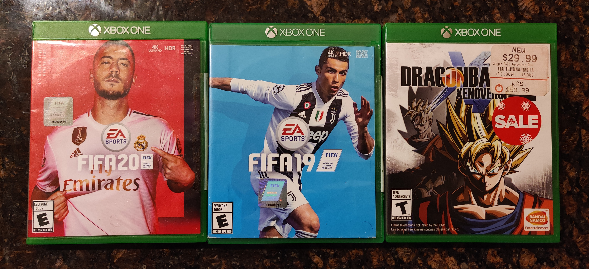

Some of my favourite football and cricket clubs are:
I acively follow sports like cricket and football. Mumbai Indians plays in a T20 cricket league called the Indian Premier League(to find out more about the league please visit www.iplt20.com). FC Barcelona and Manchester City FC play in football leagues called La Liga(www.laliga.com) and English Premier League(www.premierleague.com) respectively.
I really like wactching different kinds of animes and I have listed some of my favourite shows below:
I also really like playing video games based on these anime shows and sports. Here's a picture of some of the games I play:
